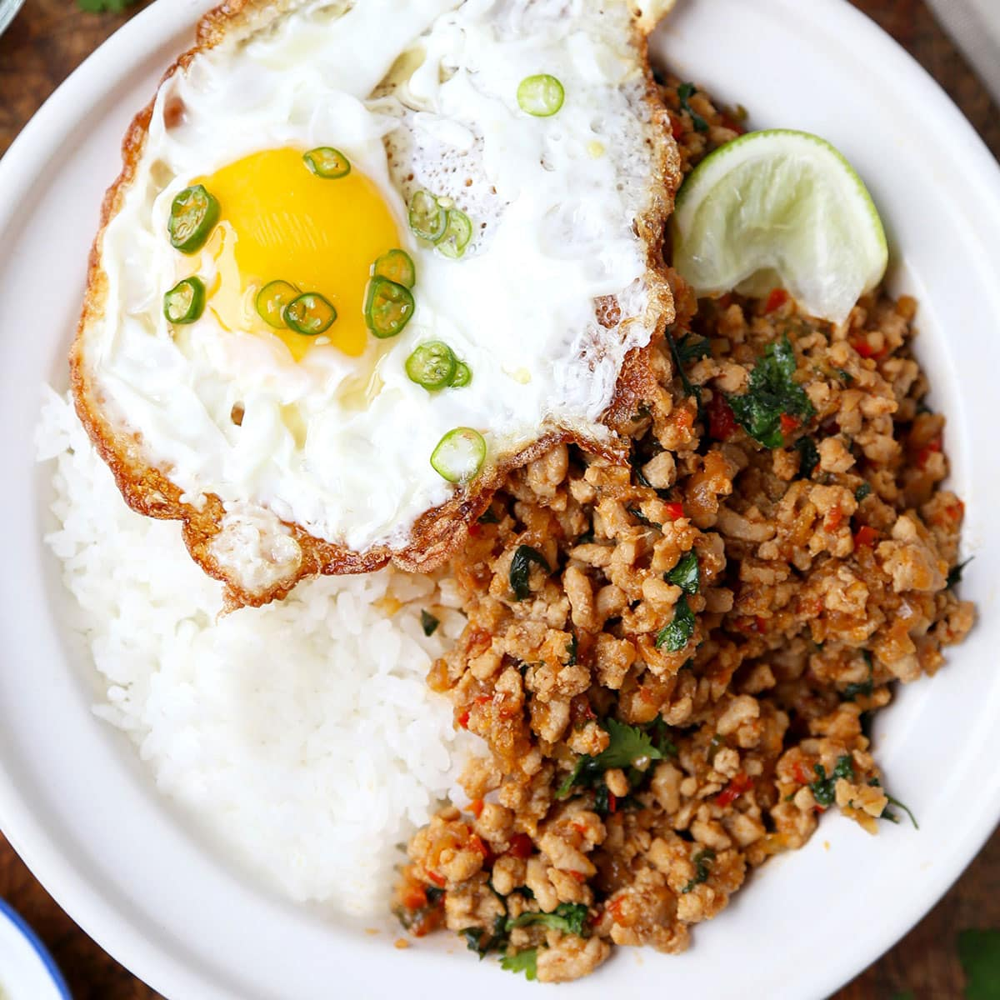

Pad Krawpow Gai Recipe

Description
Pad Krawpow Gai is a stir-fry dish made with finely chopped or ground chicken cooked with chile peppers, garlic, and shallots, and seasoned with a sweet and salty sauce and finished with fresh basil. It's a classic dish in
Thai cuisine and can be found in restaurants and as a popular street food.
Ingredients
- sauce
- chicken
- basil
- Shallots and garlic
- hot chilly peppers
Steps
- Whisk chicken broth, oyster sauce, soy sauce,
fish sauce, white sugar, and brown sugar together in a bowl until well blended.
- Heat large skillet over high heat. Drizzle in oil.
Add chicken and stir fry until it loses its raw color, 2 to 3 minutes.
- Stir in shallots, garlic, and sliced chilies. Continue cooking on high heat until some of the
juices start to caramelize in the bottom of the pan, about 2 or 3 more minutes.
- Add about a tablespoon of the sauce mixture to the skillet;
cook and stir until sauce begins to caramelize, about 1 minute.
- Pour in the rest of the sauce. Cook and stir until sauce has deglazed the bottom of the pan.
Continue to cook until sauce glazes onto the meat, 1 or 2 more minutes. Remove from heat.
- Stir in basil. Cook and stir until basil is wilted, about 20 seconds. Serve with rice.
Home